|
|
I still have the VW Kombi, but I bought a few more VW 'type 2' vehicles. By the way: the word 'type 2' revers to the different models Volkswagen produced in the past. First there was the Beetle: 'type 1', a few years later they introduced the Van, hence 'type 2'.
Here's the list of all my previous and current aircooled Volkswagens:
| 1. | 6-Up | 1978 Kombi (My first car) | 2. | Dukapano | 1976 Crew Cab (recycled) | 3. | AK-92 | 1974 Beetle (sold) | 4. | Franekerbus | 1976 Delivery van (recycled) | 5. | Concordia | 1977 Delivery van (waiting for restoration) | 6. | Summer of '69 | 1969 Westfalia camper (recycled) | 7. | Gjaltbus | 1979 Kombi (sold) | 8. | Croky de Krokante Kever | 1973 Beetle (name in English: Croky the Crunchy Beetle)(sold) | 9. | Policevan | 1970 Kombi (under re-construction) | 10. | Fastback | 1971 1600TL Automatic |
 |
 |
Recognize these plates? They are fixed in all Volkswagen Transporters from 1958 until 1979. If you want to know more about them, simply follow this link:
- Type 2 Sightings -
- Brochures and manuals (Under construction) -
- Some important links -
![[ back ]](http://www.geocities.com/MotorCity/1101/Typetwo.jpg)
The Type Two WebRing--For VW Bus and Camper Lovers
This
Type Two WebRing site is owned by .
[ Next
Page | Skip
Next | List
Next 5 | Random
Link ]
Questions or comments, email the Ringmaster at: joec@xfilesfan.com.
Want to join the webring? Click
Here
I have decided not to do what others have already done much better. So here are the most important links I give you. These certainly help you to find out more about VW's.
| www.type2.com | The Type 2 Mailinglist | Loads of Technical information |
| www.luchtlist.nl | Luchtlist | Mailinglist for all Dutch-speaking aircooled VW lovers |
| www.bulli.org | T2ig / VW Bus Museum | Home of the German T2ig and the VW Bus Museum |
| www.bullikartei.de | Bullikartei | The German club for all Splitscreen lovers and owners |
| http://www.vanagon.com/info/stolen/ | BusAlert Mailinglist | Has your VW Transporter been stolen? Report it here!! |
| www.thesamba.com | The Samba | Lots and lots of (Type 2) pictures |
| www.ploon.nl | Ploon's Aircooled VW site | A big collection of VW links |
| 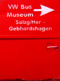 | T2ig Springmeet Some pictures of the T2ig spring meeting held on the 14th, 15th and 16th of April 2000. |
Germany, VW-Bus Museum Salzgitter
A very special army van used by the German Air Force. It used to be equiped
with a Jet engine to prehead jetfighters. It still looks pretty weird from
the ouside. Just check out the pictures below.
| 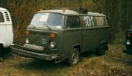 | 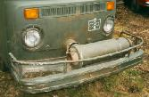 | 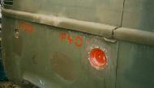 |
Netherlands New Guinea
In 1962 a stamp was issued in former Netherlands New Guinea concerning
road savety. The car in the back is clearly a VW type 2, it's not clear
to see if this is a pick-up or a bus. Check out for yourself:
| 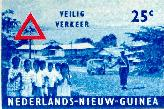 | 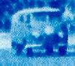 |
Vietnam (Southern)
For those who wonder if there are any VW transporters around in Vietnam
here's the proof. I spotted all the transporter types made by VW, from
split window to Eurovan. I was only able to catch an Early Bay window on
camera:
| 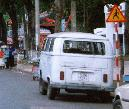 |
Norway (near the North Cape)
My parents spotted this 1965 Crew Cab near the North Cape in Norway. It is
located beside the only road that leads to the North Cape, you can't miss
it. Beside the Crew Cab you will also find a Ford Transit lying on its side,
but we're not really interested in that, are we?
| 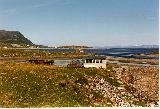 | 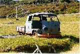 | 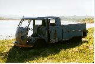 |
Italy (Rome)
A well used and abused Delivery van. Rust free!!
| 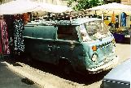 |
[top]
|
Last update: September 13th, 2000 Copyright © 1997 Vincent Molenaar molenari@hotmail.com |
DISCLAIMER |
Vincenzo's Volkswagen Vans
|
{kind=link}
{kind=link}
{kind=link}
{kind=link}
{kind=link}
{kind=link}
{kind=link}
{kind=link}
{kind=link}
{kind=link}